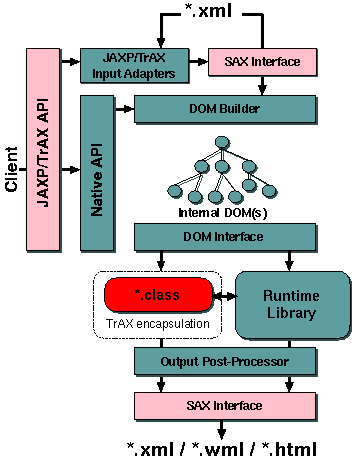

The runtime portion of XSLTC has four main components; the internal DOM
implementation (not W3C), the translet class(es), the runtime
library and the output processor:

Figure 3: Runtime library architecture overview
The runtime library design document
describes the structure of the compiled translet as well as the translet
runtime library.
The Internal DOM design document
describes the components and structure of the internal DOM, support for
DOM2 navigation, the DOM adapter, DOM multiplexer, and DOM builder.
The iterator design document
describes the general design of the internal DOM iterators and describes
some of the more complicated iterators in detail.